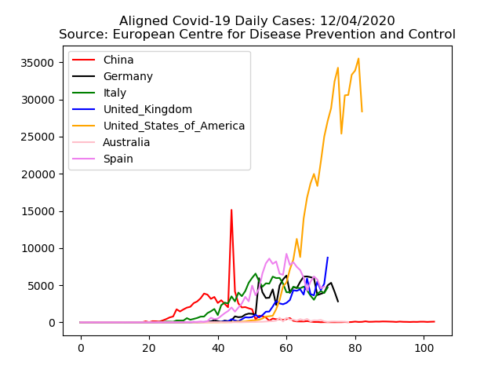
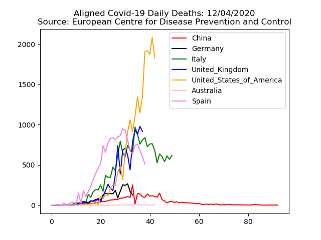
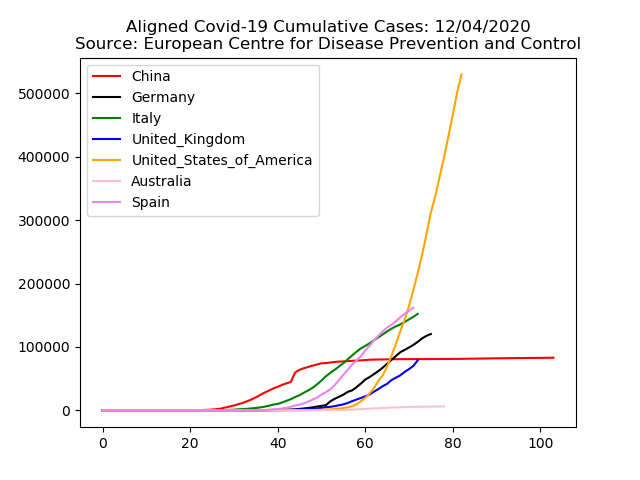
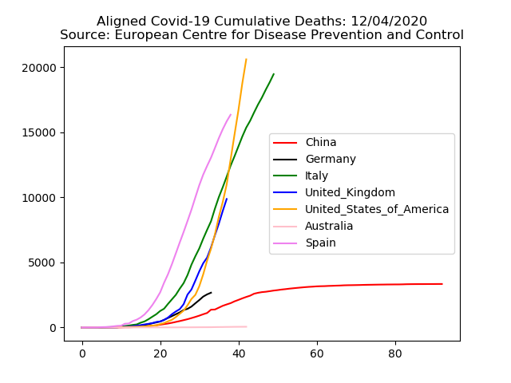
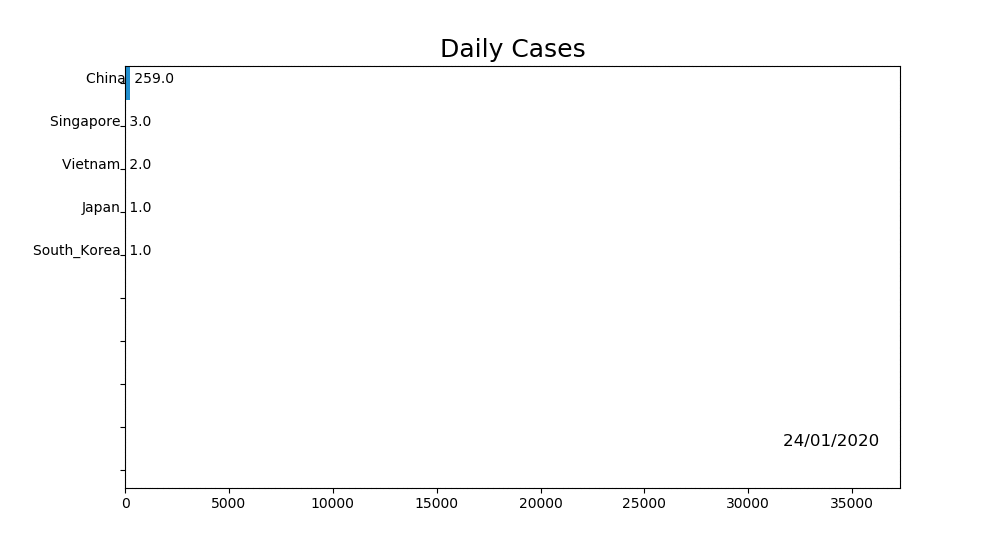
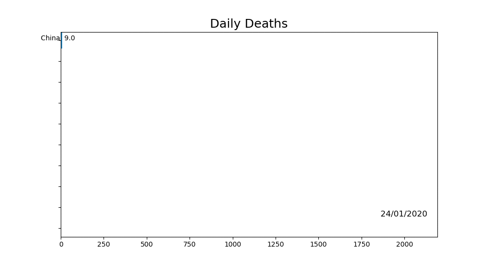

Covid-19 Statistics




** Aligned data aligns first case or death in the specific country. This allows comparisons of different curves.


Reference :
These graphs have been generated using the public data from : European Centre for Disease Prevention and Control
Python source code to generate these graphs is available here : Edwards Lab, Github. Courtesy of : Edwards Lab, San Diego State University